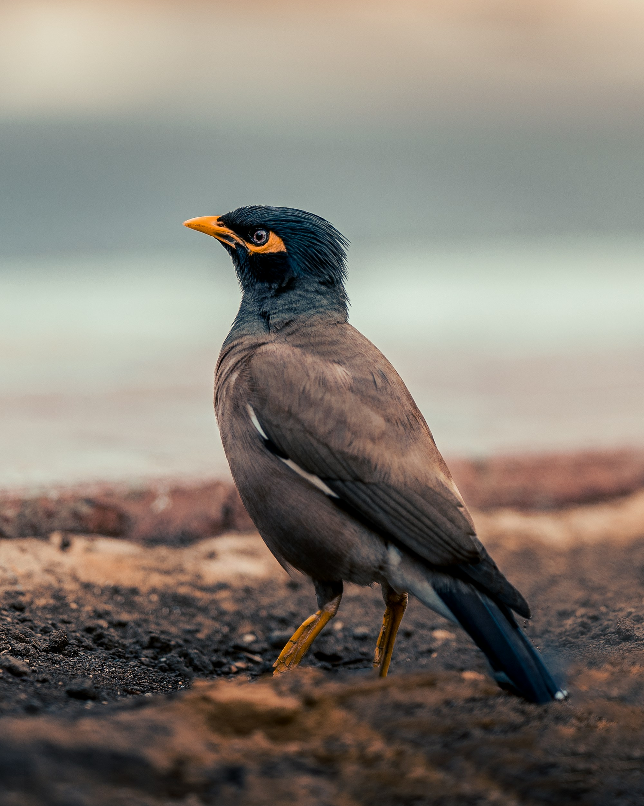

The Common Myna is a highly adaptable bird with a brown body, black head, bright yellow eye patch, and yellow legs and bill. It thrives alongside people and can be found in towns, cities, farmland, gardens, and open countryside. Mynas are opportunistic feeders and eat a remarkably varied diet. They are social and vocal birds, often gathering in groups around feeding and roosting sites. Compared with the similar Indian Pied Starling, it is distinguished by the combination of features described above. Its preference for cities, villages, farmland, gardens, grasslands, and open woodland also helps separate it from species that use different habitats. Its characteristic behaviour, including highly social, adaptable, and often seen foraging on the ground in pairs or groups, provides another useful field clue. Taken together, these differences make it easier to distinguish from similar species when the bird is seen clearly.